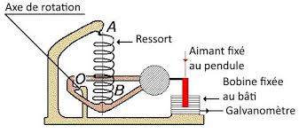

Sismometrede Atalet Sistemi Nasıl Çalışır?
Sismometreler, temel olarak bir kütle (atalet kütlesi), bir yay ve bir sönümleme mekanizması içerir. Bu sistem, yer hareketlerine tepki verir ve bu hareketleri kaydeder.
Atalet Kütlesinin Tanımı ve Rolü
Atalet kütlesi, sismometre içinde serbestçe hareket edebilen bir kütledir. Bu kütle, yer hareketlerine tepki verir. Atalet kütlesinin temel görevi, yer hareketi sırasında hareketsiz kalarak, sismometre gövdesi ile arasında bir göreli hareket oluşturmaktır. Bu hareket, sismometrenin yer sarsıntısını ölçmesini sağlar.
Atalet Kütlesinin Çalışma Prensibi
Atalet kütlesi, eylemsizlik yasası ile çalışır. Bu yasa, bir cismin üzerine net bir kuvvet etki etmediği sürece durumunu koruyacağını belirtir
- Duran bir cisim durmaya devam eder.
- Hareket halindeki bir cisim, sabit hızla hareketine devam eder.